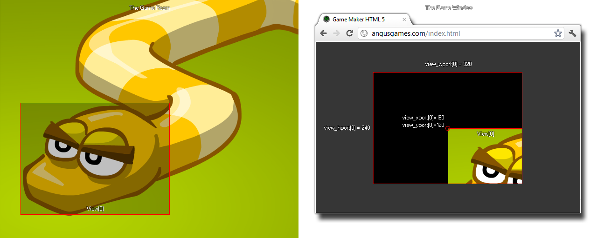

view_xport
绘制区域内视野屏幕输出的X坐标。The x-position of the viewport within the drawing region.
Syntax 用法:
view_xport[0...7]
Returns 返回: Real 实数
Description 描述
有了这个变量，你可以获得或设置视野屏幕输出的X坐标。视野的屏幕输出就是视野在屏幕上绘制的地方。现在，GameMaker:Studio 里默认的是游戏窗口（或者背景画布）等同于游戏房间的大小，然而当你激活多个视野时会有所不同，它将变为所有视里屏幕输出的边界框的总大小。所以，如果你有两个不同的视野，输出在不同的屏幕位置， 总的区域覆盖的边界线将定义游戏窗口的大小，如下图所示。
With this variable you can get or set the x position of the view port. The view port is the are on the screen where the view is drawn. Now, the default for GameMaker:Studio is that the game window (or background canvas) is the same size as the room,
however when you activate views, this behaviour changes and the total size of the bounding box for all view ports is used. So, if you have two different view ports at two different positions, the total area that they cover defines the size of the
game window. The following image illustrates this:

如果仅有一个激活的视野（且仅有一个视野输出），此时设置视野的屏幕输出的X/Y坐标会导致一些有趣的效果，但通常都不实用（看下图），因此最好是将视野输出的X/Y坐标保持在(0,0) 的位置。
If you only have one view active (and so only one view port) setting the x or y value of the port can have some interesting effects but is not normally practical (see the image below) and so it is better to maintain the x and y position as (0,0).

Example 例子:
view_xport[0] = 0; view_yport[0] = 0;
上述代码将重置view[0]屏幕输出的X/Y坐标为屏幕显示的(0,0)位置 （左上角）。
The above code resets the position of view port[0] to the (0,0) position (top left hand corner) of the display.
-断水-